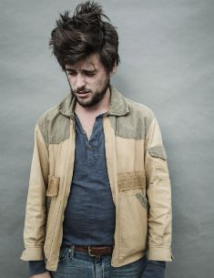

Early life
Winston was born on December 7, 1988 to father Paul Marshall, a British investor,
philanthropist, and co-founder of the Marshall Wace LLP hedge fund, and mother Sabina, of French descent.
Educated at St Pauls School [2] Marshall has one sibling, a sister, named Giovanna. In October 2013, Marshall
joined a temporary supergroup named Salvador Dali Parton with fellow musicians Gill Landry of Old Crow Medicine Show,
Mike Harris of Apache Relay, Jake Orrall of JEFF the Brotherhood, and Justin Hayward-Young of the Vaccines.

Mumford & sons
Marshall is a founding member of the British folk band Mumford & Sons. He plays the banjo, bass guitar,
guitar, dobro, and provides backing vocals. Marshall performed with two of his current band members, Marcus Mumford and Ted Dwane,
with Laura Marling before Mumford & Sons.Before Mumford & Sons became established, Marshall ran a jam night at Bosun's Locker, a
tiny music club beneath a pasty shop on the King's Road in Fulham, where a number of musicians who had an affinity for earthy acoustic
music hung out and played with each other in fluid lineups.Marshall was in a band prior to Mumford & Sons called Captain Kick and the
Cowboy Ramblers, a bluegrass sleaze rap band, where he was credited as Country Winston and played the banjo and guitar.